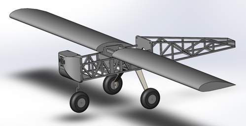
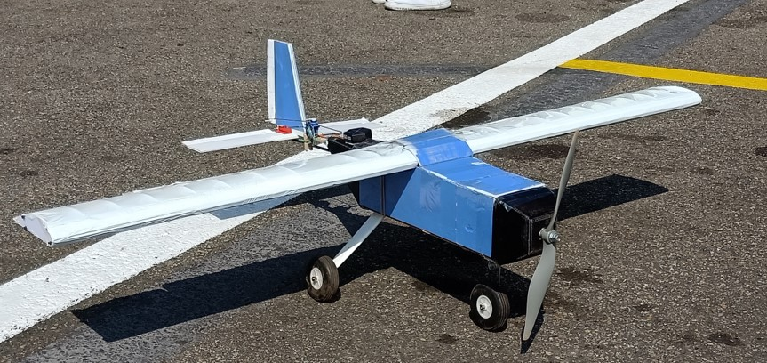

<div class="row">
    <div class="offset-3 col-md-4 text-center">
        
    </div>
    <div class="col-md-4">
        
    </div>
</div>
<div class="row">
    <div class="offset-3 col-md-8" id="plane_intro">
        &emsp;本屆飛機參與<b>2019台灣無人飛機創意設計競賽-導航組</b>之2公斤以下組競賽，其訴求為希望透過無人機的方式，完成搜救定位之需求，且能應用於長航程之任務，故在設計上採用輕量化骨架設計，並搭載飛控系統完成自主飛行及任務規劃。
    </div>
</div>
<div class="row">
    <div class="offset-3 col-md-8">
        <table class="table table-bordered text-center">
            <thead>
                <tr>
                    <th scope="col">機型<br>Airframe</th>
                    <th scope="col">翼展<br>Wing Span</th>
                    <th scope="col">弦長<br>Chord Length</th>
                    <th scope="col">空機重量<br>Clean Weight</th>
                    <th scope="col">目標<br>Target</th>
                </tr>
            </thead>
            <tbody>
                <tr>
                    <td>高翼定翼機<br>(High-wing fixed wing)</td>
                    <td>1.5m</td>
                    <td>~0.19m</td>
                    <td>2kg</td>
                    <td>導航及自主飛行</td>
                </tr>
            </tbody>
        </table>
    </div>
</div>